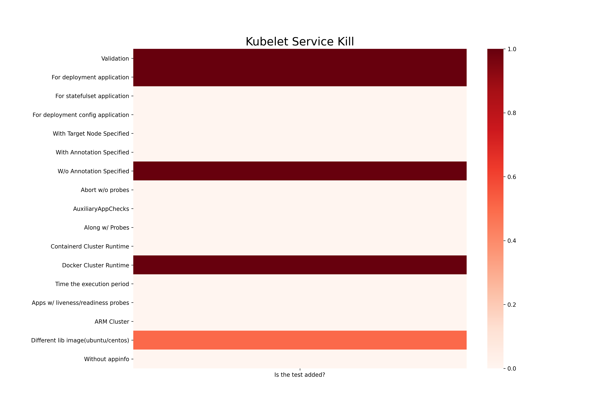
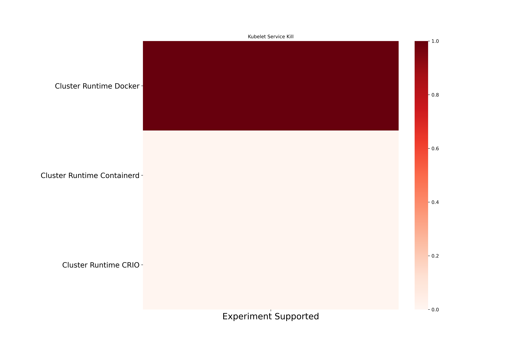
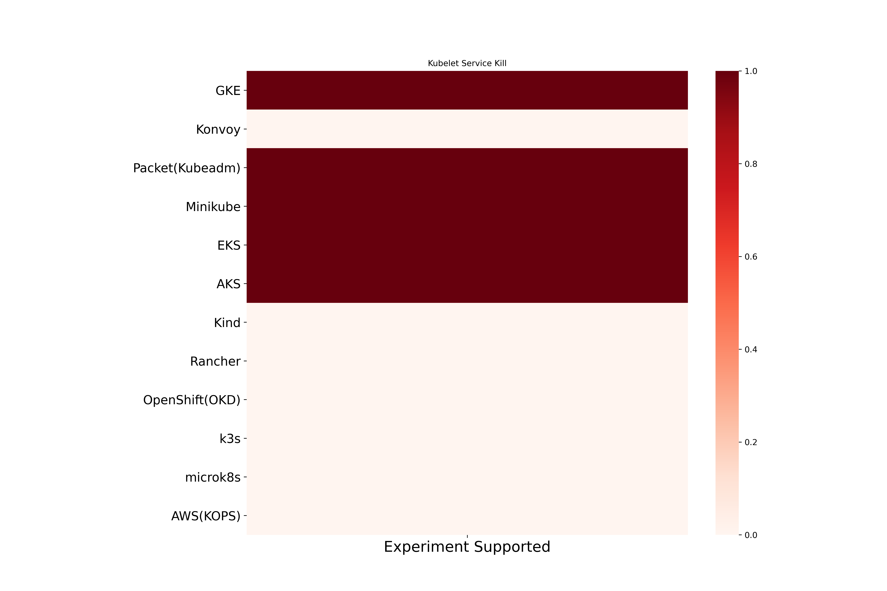

Kubelet Service Kill Chaos
Kubelet Service Kill fills up ephemeral storage of an application pod. Here are the different coverage metrics for the experiment.
Kubelet Service Kill experiment based coverage

Kubelet Service Kill cluster runtime based coverage

Kubelet Service Kill platform based coverage
